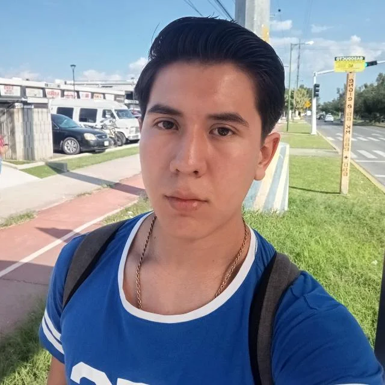

Democratizando la Neuroeducación con IA
Plataforma de intervención temprana para niños con TEA que ajusta el aprendizaje en tiempo real basado en métricas neurocognitivas. Nacida de la pasión por cerrar brechas en México.
Live AI Response Optimization
Nuestra Historia y Motivación
Orígenes: Una Pasión Compartida
Neuro-BlueMinds nació en 2025 en el Tecnológico de Monterrey, Campus Guadalajara, de un equipo de estudiantes de ingeniería (biomédica, mecánica, biotecnología y programación) unidos por el programa Líderes del Mañana. Motivados por la crisis de acceso a terapias para niños con Trastorno del Espectro Autista (TEA) en México —donde costos mensuales superan los $12,800 MXN y listas de espera llegan a 2 años— decidimos crear una solución accesible y escalable.
Inspirados en la neuroplasticidad infantil y modelos clínicos como ABA y VARK, integramos IA para hacer la intervención hiperadaptativa. Nuestro primer hito: Ganar la etapa local de DigiEduHack 2025, organizada por el IFE y la Unión Europea, lo que nos abrió puertas a la IFE Conference 2026.
Motivación: Cerrar Brechas Sociales
En México, 1 de cada 115 niños tiene TEA, pero el 70% en zonas rurales (como Oaxaca o Chiapas) no accede a intervención temprana. Esto genera rezagos irreversibles. Nuestra motivación es empoderar familias vulnerables, reduciendo brechas económicas y geográficas mediante una plataforma semigratuita que acelera el progreso funcional en lenguaje, comunicación y habilidades socioemocionales.
Con respaldo de especialistas en neuropsicología y el Instituto de Emprendimiento Eugenio Garza Lagüera, aspiramos a impactar a 1,500 usuarios en el primer año, transformando la educación especial en LatAm.
Arquitectura Neuronal
.NET Core + Real-Time IA/ML
Nuestra plataforma no solo enseña, escucha. El backend analiza patrones bio-conductuales en milisegundos para evitar sobrecarga sensorial y ajustar trayectorias personalizadas basadas en perfiles neuroconductuales.
Análisis de Latencia (LPR)
Monitorea el tiempo exacto entre estímulo y respuesta para detectar fatiga o frustración antes de que ocurra, reduciendo LPR en un 18%.
Filtro de Errores (TEP)
Identifica errores perseverativos y redirige la ruta de aprendizaje automáticamente, logrando -15% en TEP.
Validación Clínica
Basado en ABA, NDBI y VARK, con apoyo de neuropsicólogos para estimular redes neuronales específicas (lenguaje, memoria, regulación emocional).
+25%
Adquisición de Lenguaje
-95%
Costo por Sesión
Impacto Social: Transformando Vidas
Hoy, la terapia para TEA cuesta miles de pesos al mes y es inaccesible para el 70% de familias en México. Neuro-BlueMinds reduce esa barrera en un 95% mediante tecnología escalable, democratizando la intervención temprana y acelerando el progreso en niños de 4-12 años.
Accesibilidad
Diseñado para dispositivos de gama media-baja, llegando a zonas rurales sin especialistas.
Inclusión
Herramientas para padres, educadores y terapeutas, fomentando integración en escuelas y comunidades.
Ética IA
Privacidad absoluta, datos anónimos y algoritmos libres de sesgo, cumpliendo normativas locales.
Métricas de Impacto Cuantificables
| Habilidad | Meta de Mejora | Medición |
|---|---|---|
| Lenguaje Expresivo | +25% | Tasa de Adquisición de Respuesta (TAR) |
| Atención Sostenida | +20% | Tiempo Máximo de Enfoque (TME) |
| Velocidad de Procesamiento | -18% | Latencia Promedio de Respuesta (LPR) |
| Regulación Socioemocional | +15% | Porcentaje de Aciertos en Emociones |
Proyecciones: Escalar a 1,500 usuarios activos en el primer año, integrando con gobiernos estatales para abatir rezagos en regiones vulnerables. Testimonios iniciales: "Cambió la vida de mi hijo al hacer la terapia accesible en casa" - Padre de familia piloto.
El equipo detrás de la innovación
Luis Nazariego
CEO & IBM
Líder visionario motivado por el impacto social en neurodesarrollo.

Víctor André
Backend & IA
Experto en ML, apasionado por algoritmos que cambian vidas.
Jose Miguel
UX Sensorial
Diseñador enfocado en interfaces inclusivas para neurodivergencia.
Diego Martín
Frontend Dev
Creador de experiencias intuitivas y accesibles.
Carlos Alberto
Estrategia IBT
Estratega en biotecnología para escalabilidad sostenible.